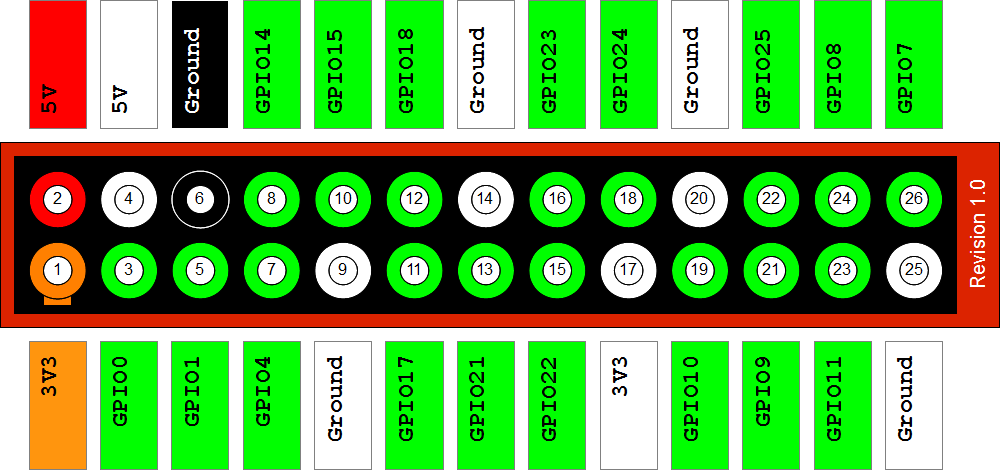

Obtener número de serial y número de versión de Raspberry Pi con Python
Posted on mié 06 febrero 2013 in Tutorial de Python • 3 min read
El Raspberry Pi tiene información de número del número de revisión del PCB, este número indica que se tiene pequeños cambios en el PCB. Estos cambios pueden afectar en el funcionamiento de los programas Python e incluso como está distribuido los pines (alimentación, entrada/salida, etc) en la placa.
Está información se puede obtener desde el archivo /proc/cpuinfo como se indica a continuación:
ernesto@raspberrypi ~ $ cat /proc/cpuinfo
Processor : ARMv6-compatible processor rev 7 (v6l)
BogoMIPS : 697.95
Features : swp half thumb fastmult vfp edsp java tls
CPU implementer : 0x41
CPU architecture: 7
CPU variant : 0x0
CPU part : 0xb76
CPU revision : 7
Hardware : BCM2708
Revision : 000f
Serial : 00000000bcd34f5e
El número de Revisión es 00f y el serial es 00000000bcd34f5e. Las variantes del Raspberry Pi según número versión se tiene a continuación (tomado de acá):
- Modelo B Revisión 1.0: El valor de cpuinfo es 0002.
- Modelo B Revisión 1.0+ECN001(sin fusible, D14 se removió): El valor de cpuinfo es 0003.
- Modelo B Revisión 2.0: El valor de cpuinfo es 0004,0005, 0006...
El sitio Raspberrypi spy tiene un par de scripts para obtener el número de revisión y el serial de la placa.
A continuación se muestra el script (con una pequeña corrección):
#!/usr/bin/env python
# -*- coding: utf-8 -*-
"""
Script que busca la informacion del serial y numero de revision en el Raspberry Pi.
Este script se obtiene de los siguientes enlaces:
Numero de Revision:
http://www.raspberrypi-spy.co.uk/2012/09/getting-your-raspberry-pi-revision-number-using-python/#more-574
Numero de Serial:
http://www.raspberrypi-spy.co.uk/2012/09/getting-your-raspberry-pi-serial-number-using-python/#more-570
"""python
def getrevision():
# Extrae la informacion del numero de revision del raspberry pi
#Se asigna a revision un string de 4 ceros.
revision = "0000"
#Se abre el archivo cpuinfo
#Se
try:
f = open('/proc/cpuinfo','r')
#Se recorre el archivo
for linea in f:
#Si existe el contenido Revision en una linea
if linea[0:8]=='Revision':
#Se toma la longitud de la linea
longitud =len(linea)
#Se agrega la informacion completa de la revision
revision = linea[11:longitud-1]
#Se cierra el archivo
f.close()
#Si no abre el archivo se asigna 4 ceros a revision
except IOError:
revision = "0000"
#Se retorna el valor de revision
return revision
def getserial():
# Extrae la informacion del serial desde cpuinfo
#Se asigna un string con ceros a cpuserial
cpuserial = "00000000"
#Se intenta a capturar la informacion del archivo cpuinfo,
#si no se tiene un mensaje de error.
try:
f = open('/proc/cpuinfo','r')
#se recorre el archivo linea a linea
for linea in f:
#Si existe el contenido Serial en la linea
if linea[0:6]=='Serial':
#Se agrega la informacion completa del serial del cpu
cpuserial = linea[10:-1]
#Se cierra el archivo
f.close()
#Si no abre el archivo se asigna el valor de error al serial
except IOError:
cpuserial = "ERROR000000000"
#retorna el valor del serial del cpu
return cpuserial
if __name__ == '__main__':
print u"El número de Serial del Raspberry Pi es: %s " %getserial()
print u"El número de Revision del Raspberry Pi es: %s" %getrevision()
Al ejecutar el script se obtiene lo siguiente:
ernesto@raspberrypi ~ $ ./versionSerial.py
El número de Serial del Raspberry Pi es: 00000000bcd34f5e
El número de Revision del Raspberry Pi es: 000f
Ya con esta información se tiene que el Raspberry Pi es de la revisón 2.0.
A continuación se muestra la organización de los pines de la revisión 1.0:

Y la organización de los pines de la revisión 2.0:
Con esta información ya se conoce como realizar las conexiones de los circuitos con el Rasberry Pi.
¡Haz tu donativo! Si te gustó el artículo puedes realizar un donativo con Bitcoin (BTC) usando la billetera digital de tu preferencia a la siguiente dirección: 17MtNybhdkA9GV3UNS6BTwPcuhjXoPrSzV
O Escaneando el código QR desde la billetera: